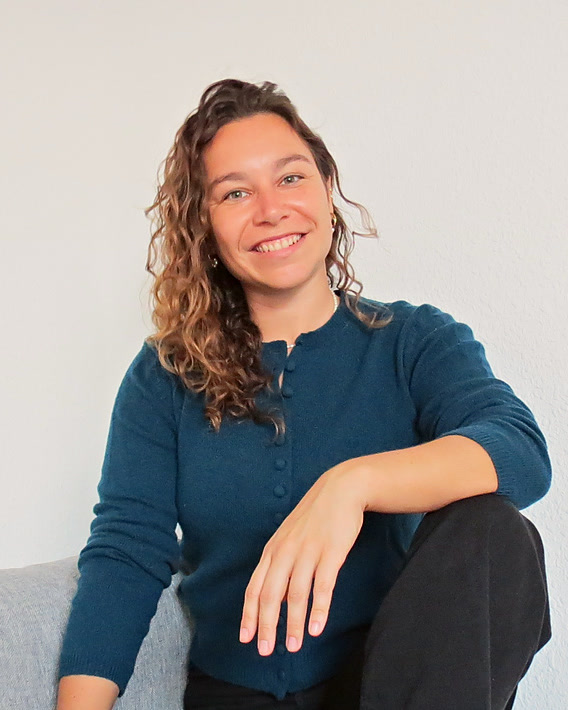

Consultoría estratégica de crecimiento
Existe una fórmula precisa detrás de las marcas online que escalan. Es la que decide si creces o te quedas donde estás.
Vengo de la banca de inversión y llevo más de quince años analizando empresas. Miro la tuya igual que miraría una compañía cotizada: márgenes, coste de adquisición y retorno por cada euro invertido. Y después decidimos juntas dónde empujar.
Ayudo a negocios online que ya facturan a escalar con criterio financiero: «Negocios Escalados en 3 pasos».
Qué hago
No soy una agencia de marketing
Soy la socia de crecimiento que se sienta contigo a decidir dónde hay que empujar antes de que gastes un euro más en empujar.
Eso es estrategia: no se trata de hacer más cosas, sino de saber cuáles son las tres que de verdad mueven el resultado y en qué orden. Porque crecer a base de subir el presupuesto de anuncios no es escalar, es pagar más por lo mismo.
El método
Los 3 pasos
No lo he inventado yo. Es un método probado, y mi trabajo es aplicarlo a tu negocio con criterio financiero.
Atención
Captar la atención de tu cliente ideal, de forma orgánica o con tráfico pagado, y dirigirla a un embudo de venta con una oferta de contenido de alto valor.
Conversión
Crear un sistema que convierta esa atención en ventas, apoyándonos en ofertas de adquisición que ya han demostrado funcionar.
Posventa
Desarrollar un proceso posventa que extienda el valor de cada cliente a lo largo del tiempo, con automatizaciones como el email marketing.
Cuando este sistema está montado tienes un proceso de captación que funciona siempre, aunque cambien las tendencias del mercado. Sabes exactamente cuánto puedes gastar para traer un cliente nuevo y cuánto vale ese cliente para tu negocio a lo largo del tiempo.
Y cuando tienes eso, tienes un negocio escalable.

Sobre mí
Quién soy
Me llamo Alba D. Iranzo. Vengo de la banca de inversión y de la consultoría estratégica. Llevo más de quince años analizando empresas, entendiendo negocios por sus números y ayudando a marcas a crecer su presencia online. Mi padre me enseñó a leer un balance a los catorce años.
Hace casi 4 años dejé la banca para emprender. Varios proyectos, 3 países y 4 ciudades después, he estado en los dos lados: el del análisis y el de llevar mi propia marca. Por eso sé lo que cuesta hacer crecer un negocio cuando además tienes que estar metida en todo lo que pasa cada día.
Y aprendí algo que ahora es mi forma de trabajar: casi ningún negocio se estanca por falta de ideas. Se estanca porque nadie está mirando los números correctos.
- Ex banca de inversión
- Consultoría estratégica
- Más de 15 años analizando empresas
- Seis proyectos propios, en 3 países
Proceso
Cómo lo hacemos juntas
Montamos la atención
Empezamos por el diagnóstico: de dónde viene hoy cada euro y cuánto te cuesta traer a un cliente. Con eso decidimos por dónde entra la atención de tu cliente ideal y hacia qué oferta la dirigimos.
Arreglamos la conversión
Construimos el sistema que convierte esa atención en ventas. Aquí es donde suele aparecer el dinero que se estaba escapando sin que nadie lo estuviera mirando.
Activamos la posventa
Montamos el proceso que hace que cada cliente valga más a lo largo del tiempo. Revisamos los números cada mes contra lo que dijimos que iba a pasar, y lo que no funciona se cambia con datos.
Encaje
Para quién sí y para quién no
Encajamos si…
- Tu negocio ya factura y quieres escalar con orden, no empezar de cero.
- Quieres a alguien dentro del equipo, no una agencia que te manda un PDF al mes.
- Estás dispuesta a tomar decisiones mirando los números, aunque no sean los que esperabas.
No encajamos si…
- Todavía no tienes producto validado ni ventas.
- Buscas a alguien que solo gestione campañas de anuncios.
- No quieres enseñar tus márgenes reales.
Contacto
¿Hablamos 15 minutos?
Sin compromiso y sin presentación comercial. Me cuentas dónde estás, miramos tus números y te digo con honestidad si puedo llevar tu negocio al siguiente nivel o no.